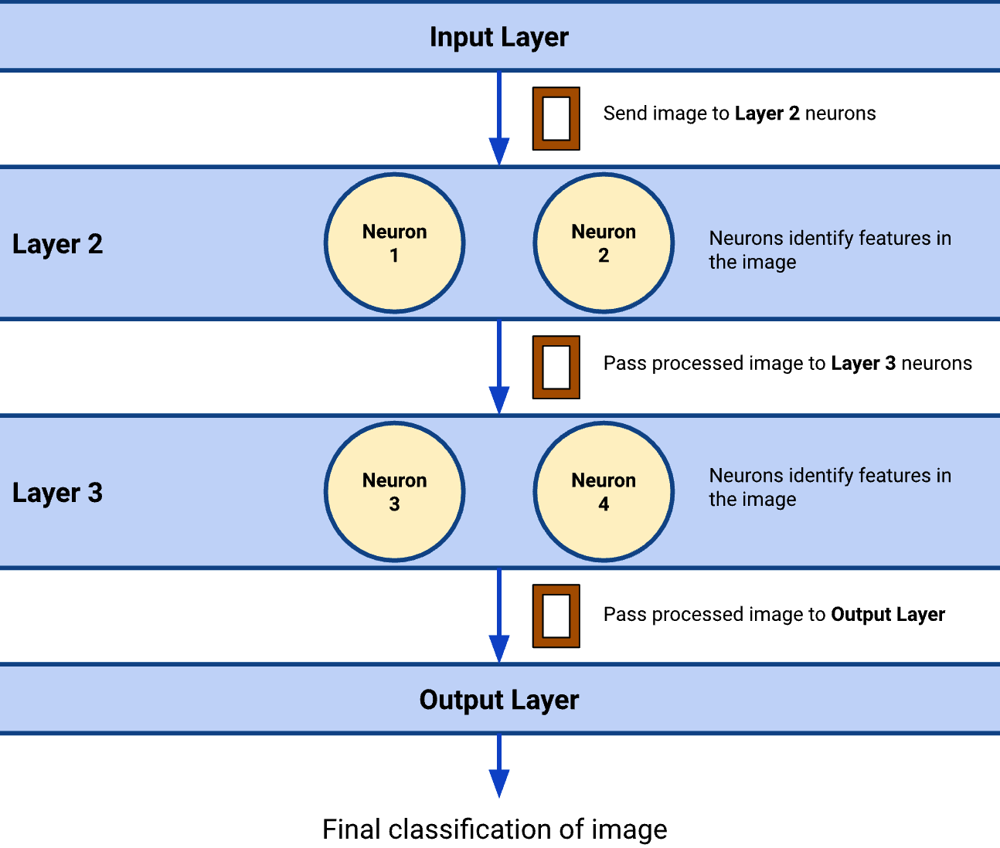

Exploring Neural Networks
Recap: Machine Learning
- Machine learning is a field of AI that uses patterns in data to build models and make predictions.
- You experimented and played around with a machine learning model (Wings Up/Down) through danceON.
- You trained your own machine learning model on Teachable Machine.
Thinking about machine learning and ethics
Have you heard about neural networks? What does it sound like it might be?
What are things that you know about how AI is used in the real world?
What opportunities do you see with the use of AI? Conversely, what potential harms do you see with the use of AI?
Neural networks are machine learning algorithms that process data in a way inspired by the human brain. Neural networks use interconnected “neurons” in a layered structure that resembles the human brain; each layer identifies increasingly complex features.
AI and machine learning are used across many domains, including, among others — entertainment, healthcare, process automation, arts, etc.
Simulating a neural network
Let’s simulate a neural network – a popular machine learning algorithm – to get a sense of its inner workings!
Setup: Arrange yourselves according to the neural network table below – each of you represents a “neuron” within the layers of the neural network.
As a neuron, you have a “feature list” and your task is to use your list to identify features from a given input. For example, given an image of a pose (the input), you only identify specific features about the pose from your list, like if you can see the left leg present or if the left leg is in a specific location in the image.
| Input Layer | Layer 1 shows a picture of a pose to Layer 2 | ||
|---|---|---|---|
| Layer 2: Hidden Layer Look for 2 features |
Neuron1 Add a green sticky if: - (Body Part) The picture clearly shows the right hand - (Location) The picture clearly shows the right hand above the nose Otherwise, add a red sticky |
Neuron2 Add a green sticky if: - (Body Part) The picture clearly shows the left hand - (Location) The picture shows the left hand above the nose Otherwise, add a red sticky |
|
| Layer 3: Hidden Layer Look for 3 features |
Neuron3 Add a green sticky if: - (Body Part) Picture clearly shows the right hand - (Location) Picture clearly shows the right hand above the nose - (Body Part) Picture clearly shows the left hand Otherwise, add a red sticky |
Neuron4 Add a green sticky if: - (Body Part) Picture clearly shows the left hand - (Location) Picture clearly shows the left hand above the nose - (Location) Picture clearly shows the right hand above the nose Otherwise, add a red sticky |
|
| Output Layer: Wings Up pose or not? Criteria: No red sticky |
Results for each picture for each combination of neurons: - Neuron1 + Neuron3 - Neuron1 + Neuron4 - Neuron2 + Neuron3 - Neuron2 + Neuron4 |
||
Mechanism: To start the simulation, the input layer will send an image of a pose to each of the neurons of the next layer. The neurons will then use their feature list to identify their assigned features.
- For each feature present in the image, put a green sticky note on the image. Otherwise, put a red sticky note.
- For example, given the assigned features of the (1) left hand and (2) right leg — if the left arm is not visible in the image but the right leg is, then you put 1 red sticky note for the left arm and 1 green sticky note for the right leg.
After the neurons have finished identifying their features, they pass the image to a neuron in the next layer, who will then take their turn identifying features and adding sticky notes to the image for each feature. This process repeats until the image reaches the output layer.
The output layer determines the final classification of the pose image based on the number of features present in the image (green sticky notes). The diagram below shows a quick overview of this process.
